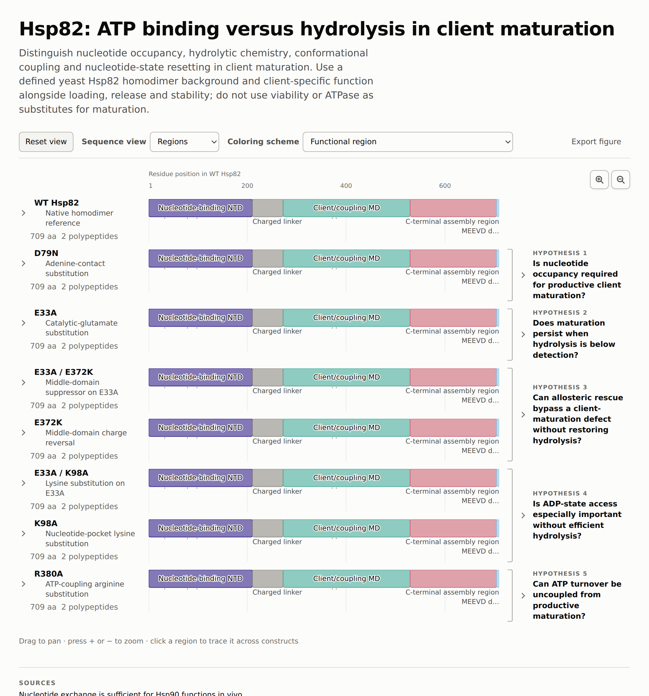

Construct Maps / ATP binding and hydrolysis in Hsp90 client maturation / Construct Maps
The Hsp82 library
In yeast, Hsp90 that cannot hydrolyze ATP still supports growth, but Hsp90 that cannot bind it does not. Which step does a given client protein need?
8 constructs (3 candidates, 4 controls, 1 reference) · 5 hypotheses · 8 cited sources, 8 confirmed in Europe PMC

Objective
Distinguish nucleotide occupancy, hydrolytic chemistry, conformational coupling and nucleotide-state resetting in client maturation. Use a defined yeast Hsp82 homodimer background and client-specific function alongside loading, release and stability; do not use viability or ATPase as substitutes for maturation.
Hypotheses
- Is nucleotide occupancy required for productive client maturation?
- Does maturation persist when hydrolysis is below detection?
- Can allosteric rescue bypass a client-maturation defect without restoring hydrolysis?
- Is ADP-state access especially important without efficient hydrolysis?
- Can ATP turnover be uncoupled from productive maturation?
Constructs
| Construct | Role | What it is |
|---|---|---|
hsp82-wt | reference | Native homodimer reference |
d79n | control | Adenine-contact substitution |
e33a | candidate | Catalytic-glutamate substitution |
e372k | control | Middle-domain charge reversal |
e33a-e372k | candidate | Middle-domain suppressor on E33A |
k98a | control | Nucleotide-pocket lysine substitution |
e33a-k98a | candidate | Lysine substitution on E33A |
r380a | control | ATP-coupling arginine substitution |